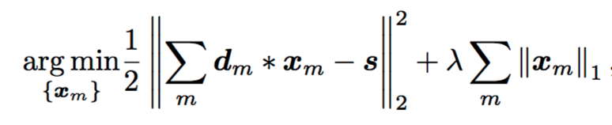
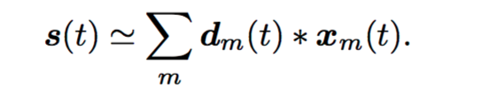
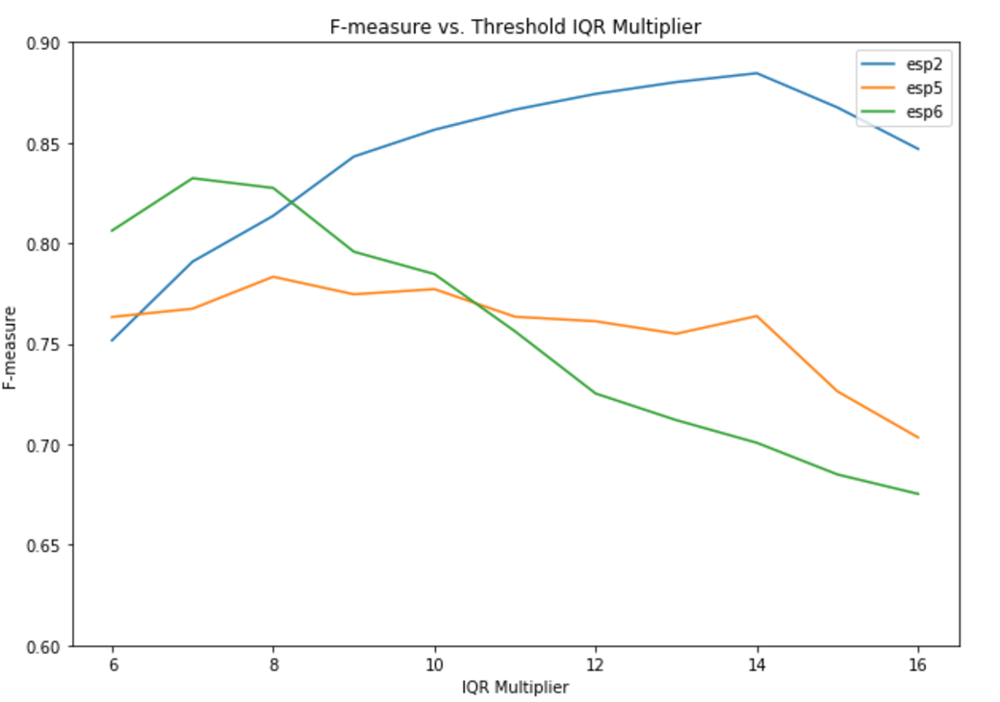
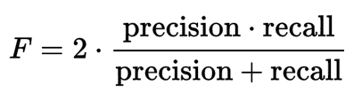
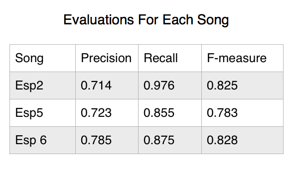
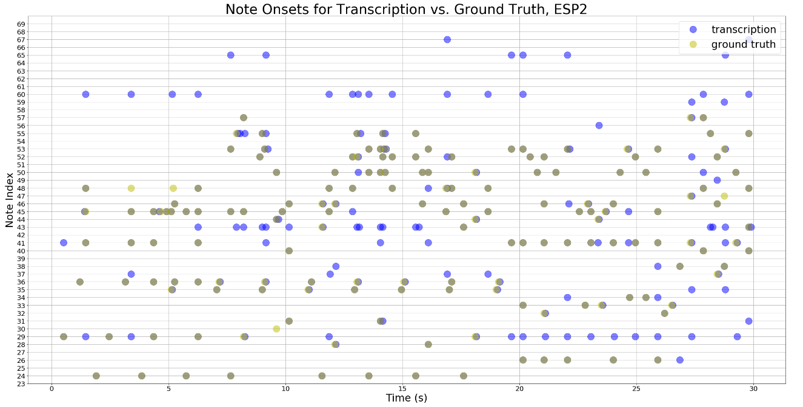
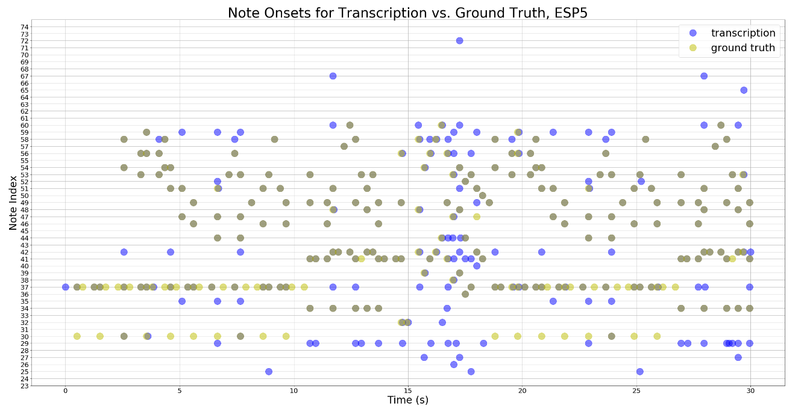
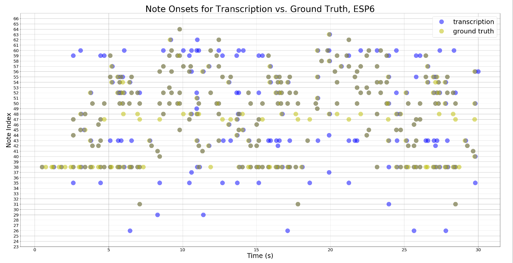

There are two types of music for pitch detection: monophonic music (one instrument playing one note at a time) and polyphonic music (one or more instruments playing more than one note at a time). While there has been much success in automatic monophonic music transcription, polyphonic transcription still remains a challenge.
As pianists ourselves, we felt this was a problem worth addressing. Polyphonic transcription is useful when a musician wants to learn a certain piece of music but doesn't have access to the musical score. This is especially true in the case of say, jazz, where each artist has his or her own interpretation of the piece, and no exact score exists. Polyphonic transcription also enables musicians to more easily formalize their compositions.
We are re-implementing the model and algorithmic approach described in Andrea Cogliati’s paper in Python. Cogliati's paper focuses on the pitch prediction and onset detection of polyphonic piano music. The method described in Cogliati's paper uses a time-domain approach to transcribe polyphonic piano performances at the note-level. The method models the polyphonic waveform as a convolution of the individual notes' waveforms and their activation weights. By solving an optimization problem called Convolutional Basis Pursuit DeNoising (CBPDN), we can derive the activation weights of each note at each sample rate timestamp. The details of this algorithm are presented in the following section.
Based on the proposed method desribed in the paper, there are four main stages for the transcription process - training, convolutional sparse coding, post-processing, and binarization.
Training
The training set in this project is a dictionary of the 88 individual notes played on a piano, and the notes were played at the dynamic level of forte. Based on these requirements listed on the paper, we got our traning samples from the MAPS database created by the Telecom ParisTech. The MAPS datbase provides recordings of the individual notes, chords and music pieces played by different pianos under different recording conditions, and their corresponding MIDI files. Based on the implementation of the paper, we used the SptkBGCI dataset from MAPS, which is the Steinway D model recorded under the "Close" recording condition. We extracted the 88 individual piano notes played at forte from the dataset, took a one-second segment of each note, and downsampled each segment from 44,100Hz to 11,025Hz to reduce the runtime of the CBPDN algorithm. This training set is the dictionary {d_m} that is passed into the sparse coding algorithm.
Convolutional Sparse Coding:
Convolutional Basis Pursuit DeNoising (CBPDN) is defined by the following formula

where s is our polyphonic signal, d_m is our dictionary of individual notes, x_m is our activation vector, and lambda is the sparsity parameter. To solve this optimization problem, we used the python version of SPORCO, an implementation of CBPDN that reduces the algorithmic time complexity from O(M^2N^2L) to O(MNlogN), where N is the length of the signal and M is the number of elements in the dictionary (88). We used a polyphonic piano performance played by the same piano used for training and took a 30s segment as s(t), and approximate it with a summation of the dictionary of individual notes d_m(t) convolved with the activation vectors for all notes x_m(t), like so:

The algorithm returns the estimations of the activations of all notes. To align the sample rate of the individual notes in the training set with the testing set, the polyphonic performance, we also downsampled the piano polyphonic music to 11,025Hz. We used 0.005 as the value for the parameter lambda, and 500 as the maximum number of iterations, as they were shown to return the best results in the paper.
Post-processing and Binarization
From the raw activation vectors x_m, we performed peak picking of the local maxima for each activation vector at each timestamp to infer note onset. Based on our observation, our local maximum peaks were very noisy. We discovered that, contrary to the original paper, the earliest local maxima that appears in the 50ms window may not be the note that was actually playing at that time. Therefore, we modified the implementation of the paper. We sorted all local maximum raw activations and calculated the Interquartile range (IQR). We calculated transcription accuracy (F-measure) for varying thresholds as shown in the plot below, and selected "Q3 + 8 * IQR" as the threshold value. We then performed a binarization of peaks based on this threshold value.
Below is the plot of the f-measures for each song using different multiplier for the IQR to set the threshold.

As we can see from the plot when the multipler is 8, the f-measure achieves a relatively good result for all 3 songs. Therefore, we picked the multipler as 8 when calculating the threshold.
For our evaluation metrics, we calculated the precision, recall, and f-measure of our transcription. In our case, precision is the percentage of notes in the transcription that appear within the ground truth. Conversly, recall is the percentage of the notes in the groundtruth that overlap with the notes in the transcription. We used a tolerance value of 50ms when calculating both recall and precision, since in practicality, few onsets in piano music occur within 50ms of others.


For our project, we ran the model on three songs played by the same piano. Figure 1 above shows their corresponding precision, recall and fmeasure. To better illustrate the overlapping between the transcription and the groundtruth, below are the scatterplots that show the relationship between the transcription and the groundtruth. The dark green dots on the plots represent the notes in the groundtruth that overlap with the transciption.



We also converted the ground truth MIDI file and the transciption to mp3 files. Even though the transciption doesn't sound exactly like the ground truth, the two versions sound very similar .